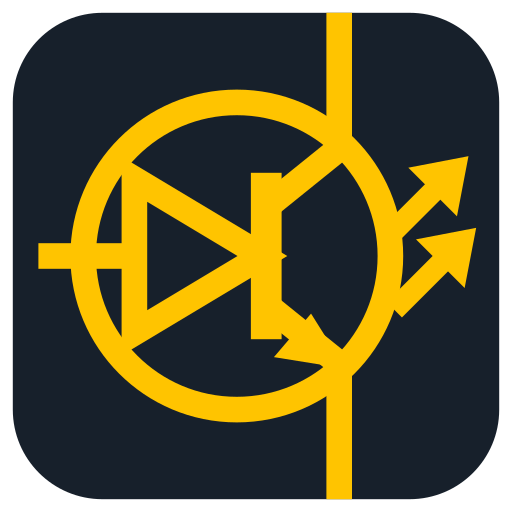

Datenblätter und Downloads
Alle Datenblätter unserer Lagertypen als PDF. Die Datenblätter stammen von den Herstellern und sind in englischer Sprache verfasst.
Silizium-Dioden
BAY 44, BAY 45, BAY 46
Universelle Silizium-Dioden im Glasgehäuse DO-7. Grenzwerte, Kennwerte, Kennlinien, Maßzeichnung.
5-mm-LEDs Serie L-7113
L-7113SURDK, Rot
Hyper Red, AlGaInP, rot diffus, 630 nm. Elektrische und optische Kennwerte, Grenzwerte.
L-7113SGD, Grün
Super Bright Green, GaP, grün diffus, 568 nm. Elektrische und optische Kennwerte, Grenzwerte.
L-7113MBTL, Blau
Blue, GaN auf SiC, blau klar, 466 nm. Elektrische und optische Kennwerte, Grenzwerte.
Applikationsschriften
AN-D01: Verpolschutz und Diodenschaltungen
Schutzdiode auswählen, Varianten vergleichen, Schaltungen mit Dioden berechnen. Mit Simulation.
AN-L02: LEDs richtig betreiben
Vorwiderstand berechnen, Arbeitspunkt grafisch bestimmen, Signalsäulen umrüsten. Mit Konfigurator.
Logo
Das LUMIATECH-Logo für Präsentationen, Dokumentationen und Arbeitsblätter. SVG lässt sich verlustfrei skalieren, PNG hat einen transparenten Hintergrund.





Maßgeblich sind immer die Werte im Datenblatt des Herstellers. Kennlinien und Simulationen auf unseren Seiten zeigen typische Werte zur Orientierung.